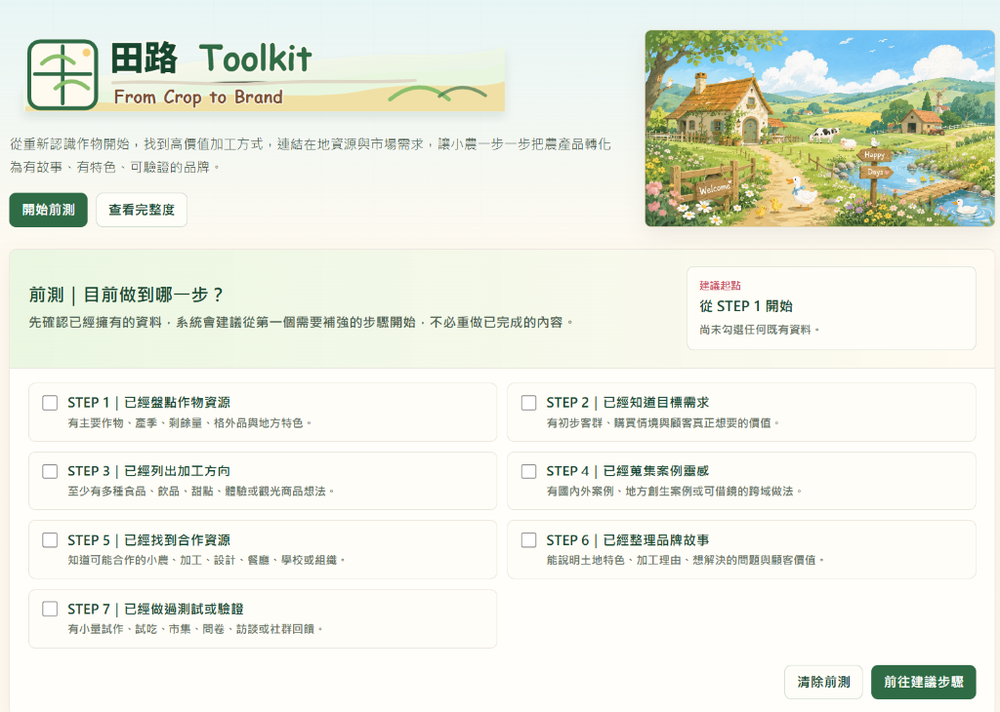
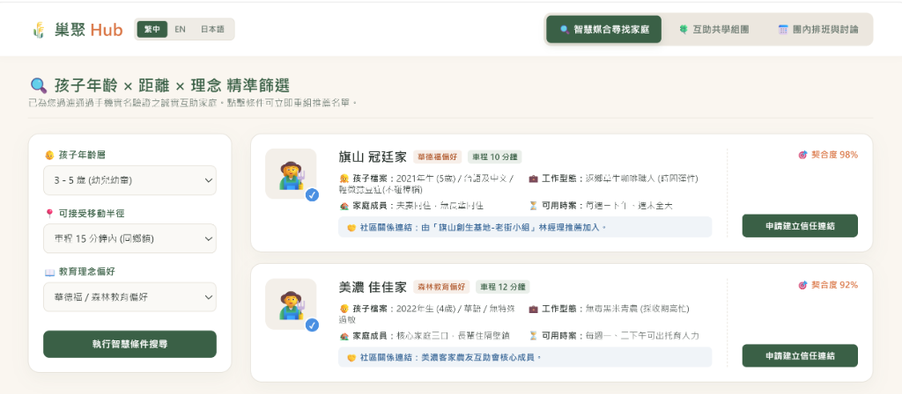
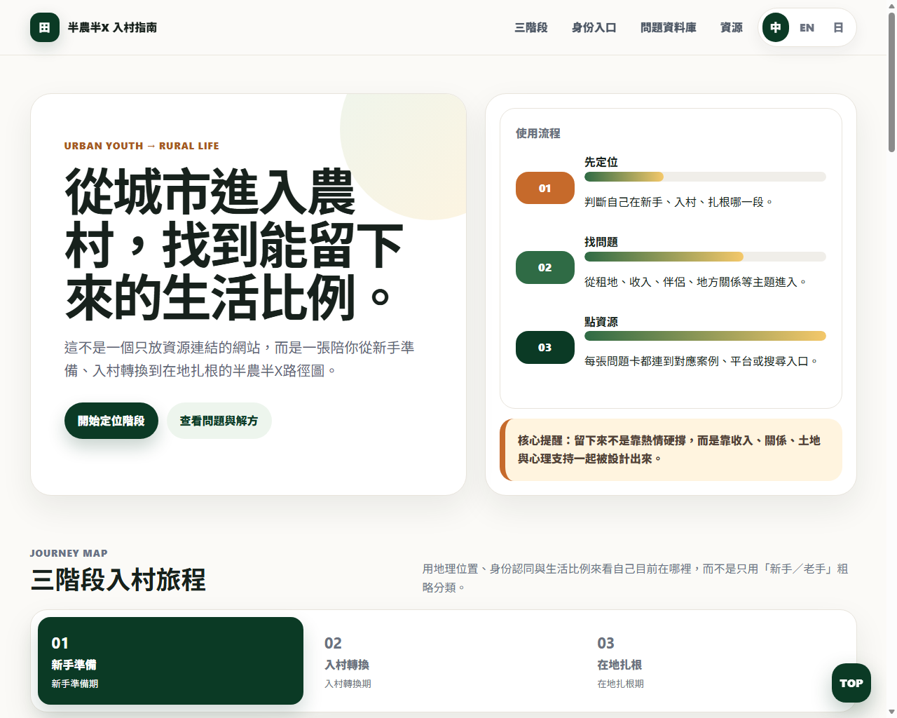

After Discover (Diverge & Explore), Define (Converge & Frame), and Develop (Brainstorm & Ideate), the cross-border co-creation team of "Terra School - Earth" reached its final stop—Deliver (Validation & Prototyping). This step is not just making paper slide reports, but building low-fidelity or digital MVPs to test face-to-face in front of Yuanshan elder farmers, Nanao young farmers, and Fo Guang University experts. The students showcased four high-completeness MVP proposals, injecting fresh design thinking into local co-creation and sustainable food & ag.
II. Field Action: Encountering the Terroir of Yuanshan, Nanao & Jiaoxi
Our field bases span Yilan Yuanshan Ah-Cong Natural Farm, Nanao Water Moon Farm, and Jiaoxi Fo Guang University. Below is the representative record of students in research, cross-border dialogue, and final presentation, documenting the authentic warmth of our field practice:
III. Four Co-Creation Proposals: Innovation with Social and Practical Value
Addressing pain points from field research, Taiwanese and Japanese students bridged language and disciplinary barriers, co-creating four clever MVP solutions through agile iteration. Click images to zoom in on presentations and prototype screenshots:
Extra-Crop Toolkit
How might we balance smallholders' daily chores with processed crop development, and establish sound financial and family risk management, to reduce the entry barriers and costs of extra-crop development?
Targeting financial and family risks smallholders face when processing extra crops (规格外, cosmetically flawed but safe surplus produce), Team A designed this digital "Extra-Crop Diagnosis Tool." The web version guides smallholders through 7 steps, starting from cataloging surplus crop resources to market research and processing positioning, drawing inspiration from global revitalization cases. It outputs a PDF report, offering high educational and guidance value.
- Crop Surplus Assessment: Help smallholders discover wasted crop resources and potential value in fields.
- 7-Step Step-by-step Guidance: Embedded case studies and exercises make it extremely easy to use.
- One-Click PDF Report: Automatically sums up evaluation results to generate a development roadmap.

Rural Healing Passport
How might we design a level-based journey to reduce the entry barrier for urban travelers, and design a relationship continuity system to sustain their deep connection with rural life and the warmth of the soil?
Experiencing rural life often becomes a one-off consumption. Team B designed the "Rural Healing Passport" as a relationship continuity system. By categorizing experiences into "short-term traveler," "mid-depth participant," and "long-term volunteer," combined with physical stamps, it transforms one-time tourist consumption into long-term interest in local life, keeping travelers emotionally attached even after returning to the city.
- Level-based Experience: Lowers psychological barriers for urban crowds to join farm stays and rural activities.
- Healing Passport Stamp Collection: Through stamp collection and terroir story cards, experiences are materialized and ritualized.
- Relationship Continuity: Connects local networks, farmers, and workshops to build a long-term support network.

Hub (Nest Gathering Hub)
How might we combine geographic locations and educational concepts to build a low-barrier mutual childcare and co-learning platform, easing parenting stress during busy seasons?
To address childcare scarcity and social isolation for young migrant farmers, Team C designed a mutual childcare platform based on "child age, travel distance, and educational concept." It features three mechanisms: first, "Find People" matches families based on child age, daily routes, and value alignments (e.g., matching Yuanshan families at 98%); second, "Form Groups" icebreaks 3 matching families to build trust; third, "Coordinate" uses timetables and a "Time Bank" token system to establish neighborhood mutual aid while ensuring safety and privacy.
- Partner Matching (Find People): Smart matching based on child age, daily commute paths, and educational value.
- Family Icebreaking (Form Groups): Facilitates 3 icebreaker activities to build solid trust among group families.
- Time Bank Transactions (Coordinate): Uses time bank token tokens for mutual childcare transactions, ensuring safety and sustainability.

Half-Farm Half-X Rural Guide
How might we translate land leasing, income strategies, and local social rules into a three-stage integration guide, reducing barriers for new migrants?
When youth migrate, their main challenge is local networks and relationships, not farming techniques. Team D created the "Half-Farm Half-X Guide" website, dividing rural integration into three stages: "Novice," "Adjustment," and "Integration." It translates land contracts, side jobs, and community communication into interactive card quiz Q&As directly linked to local resources.
- 3-Stage Integration Guide: Offers survival skills and life balance suggestions based on residence duration.
- Implicit Rules Visualized: Visualizes hidden knowledge about land lease terms, side jobs, and communication.
- Interactive Card Quiz: A card Q&A format serves as a guide to prevent youth from withdrawing due to culture shock.

IV. Field Validation & Panel Feedback
The MVP proposals were reviewed in person by Yilan local makers, ecologists, advisors, and judges from the 1221 Future Education Association. Stakeholders highly praised the practical feasibility of these designs.
"This is not cold theory; it directly addresses the daily hardships we face on this land," said a local young farmer. In particular, Nest Gathering's mutual childcare and the Half-Farm Half-X Guide's quiz Q&A translate complex neighborhood relationships into actionable tokens and maps, inspiring both new and local residents.
With this, the Design Thinking handnotes series for Terra School Earth concludes. From initial surveys to high-completeness MVPs, the transnational youth documented the intersection of terroir and design, building warm bridges for sustainable food and agriculture.